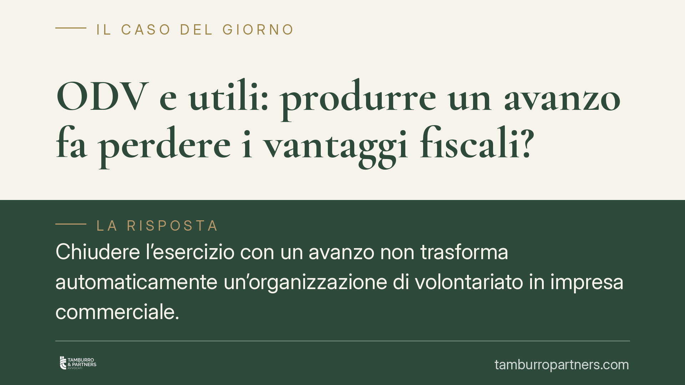

ODV e utili: produrre un avanzo fa perdere i vantaggi fiscali?
Chiudere l'esercizio con un avanzo non trasforma automaticamente un'organizzazione di volontariato in impresa commerciale. Ciò che conta, nel Codice del Terzo settore, non è produrre un margine ma distribuirlo. Con la prossima operatività del regime fiscale del Titolo X, è utile fare chiarezza su un fraintendimento diffuso, che genera timori spesso infondati negli enti e nei loro amministratori.

Il fraintendimento di partenza
Circola, tra molti enti, una convinzione errata: se un'organizzazione di volontariato (ODV) produce un utile, perde la qualifica e i benefici fiscali connessi. È un luogo comune che confonde due piani distinti.
Un conto è produrre un margine positivo, cioè chiudere l'esercizio con ricavi superiori ai costi. Altro è distribuire quel margine tra associati, amministratori o soggetti collegati. Il Codice del Terzo settore (D.lgs. 117/2017, di seguito CTS) vieta la seconda operazione, non la prima.
Un ente può e deve generare risorse per sostenersi. Il divieto riguarda la destinazione di quelle risorse, non la loro semplice esistenza in bilancio.
Inquadramento normativo
Il perno è l'art. 8 CTS, che impone l'obbligo di destinare il patrimonio, inclusi gli avanzi di gestione, allo svolgimento dell'attività statutaria. Ne discende il cosiddetto vincolo di non distribuzione: l'avanzo resta nell'ente e alimenta le finalità civiche, solidaristiche e di utilità sociale.
Il divieto si estende alla distribuzione indiretta, elencata in modo analitico dall'art. 8, comma 3. Qui si annida il rischio reale: compensi agli amministratori sproporzionati rispetto all'attività prestata, retribuzioni ai dipendenti superiori del 40% rispetto ai contratti collettivi, acquisti o cessioni di beni e servizi a condizioni più favorevoli verso parti correlate. Sono queste condotte a compromettere la natura dell'ente, non il bilancio in attivo.
Sul fronte delle attività, l'art. 33 CTS disciplina il perimetro operativo delle ODV, che devono svolgere in via prevalente attività di interesse generale avvalendosi in modo prevalente dei volontari. L'art. 33 limita inoltre i proventi diversi da quelli tipici e le modalità con cui l'ODV può acquisire risorse, tenendo ferma la vocazione volontaristica.
Il profilo fiscale: l'art. 79 CTS
Con l'operatività del regime fiscale del Titolo X del CTS, assume rilievo l'art. 79, che fissa i criteri per distinguere l'attività non commerciale da quella commerciale.
Il punto cruciale è l'art. 79, comma 2-bis. La norma prevede che un'attività di interesse generale, svolta a fronte di corrispettivi, si considera comunque non commerciale quando i ricavi non superano i costi effettivi di oltre il 5% per ciascun periodo d'imposta, e a condizione che tale scostamento non si protragga per più di due periodi d'imposta consecutivi.
In altri termini: l'eccedenza dei ricavi sui costi, l'avanzo, entro quella soglia e per quel limite temporale, non fa scattare la qualificazione commerciale. È una franchigia che riconosce la fisiologia della gestione: un ente può registrare piccoli margini senza per ciò trasformarsi in impresa.
Superata la soglia del 5%, o protratto lo scostamento oltre i due periodi, l'attività può essere riqualificata come commerciale per quel segmento, con le conseguenze fiscali del caso. Non si tratta di una sanzione sull'avanzo in sé, ma di un criterio oggettivo di misurazione.
Decorrenza del regime fiscale
L'efficacia delle disposizioni fiscali del Titolo X è subordinata all'autorizzazione della Commissione europea in materia di aiuti di Stato, ai sensi dell'art. 101, comma 10, CTS. Intervenuta tale autorizzazione, la decorrenza operativa va riscontrata nella normativa di attuazione e nelle disposizioni transitorie. Si raccomanda di verificare il quadro vigente al momento della pianificazione, poiché la data di avvio incide direttamente sugli adempimenti.
Attività diverse e criteri attuativi
Va poi considerato l'art. 6 CTS, che consente agli enti lo svolgimento di attività diverse da quelle di interesse generale, purché secondarie e strumentali. I criteri quantitativi di secondarietà sono stabiliti dal relativo decreto ministeriale attuativo, che àncora la valutazione a parametri su ricavi e componenti positivi. È su questo terreno, più che sul semplice avanzo, che si misura la coerenza del modello operativo dell'ente.
Cosa fare in concreto
- Separa i piani. Documenta in bilancio che l'avanzo è reinvestito nell'attività statutaria e non distribuito, in coerenza con l'art. 8 CTS.
- Monitora lo scostamento. Verifica anno per anno che l'eccedenza dei ricavi sui costi effettivi resti entro il 5% e non si protragga oltre due periodi consecutivi (art. 79, comma 2-bis).
- Presidia la distribuzione indiretta. Controlla compensi agli amministratori, retribuzioni e rapporti con parti correlate, verificandone la proporzionalità e le condizioni di mercato.
- Misura le attività diverse. Confronta i proventi delle attività ex art. 6 con i parametri del decreto attuativo, per assicurarne il carattere secondario.
- Aggiorna la verifica normativa. Accerta la decorrenza effettiva del regime del Titolo X prima di impostare la pianificazione fiscale dell'esercizio.
Disclaimer
Contributo informativo a cura di Tamburro & Partners - Avv. Giuseppe Tamburro. Non costituisce parere legale.
Ogni ente del terzo settore ha la sua storia.
Se rappresenti un ETS e vuoi un confronto su governance, RUNTS o fiscalità, scrivi allo studio. Ti rispondiamo entro un giorno lavorativo.